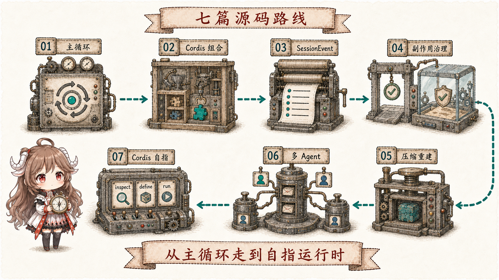

中文
从一次 turn 出发，跟着固定源码快照阅读状态、能力和恢复边界。
进入中文系列 →DeepSeek Harness Source Notes
这条路线不把 dsh 当成又一个聊天界面，而是沿着 profile 装配、ReactLoopAgent、SessionEvent、工具副作用、压缩和委派边界，理解一个 harness 怎样真正拥有运行语义。

从一次 turn 出发，跟着固定源码快照阅读状态、能力和恢复边界。
进入中文系列 →Follow one turn through composition, event sourcing, governed effects, delegation, and recovery.
Read the English series →